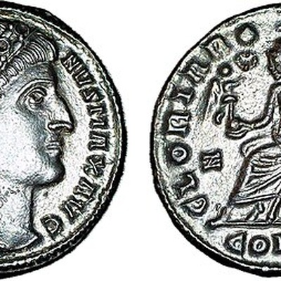
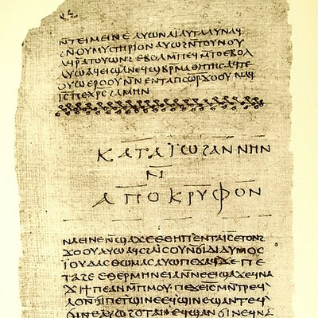
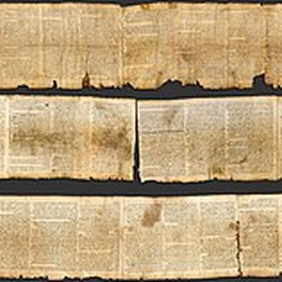
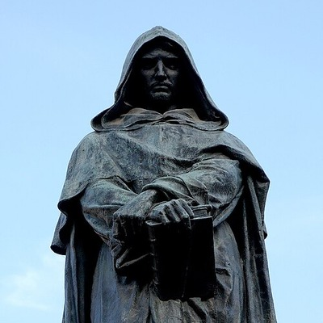
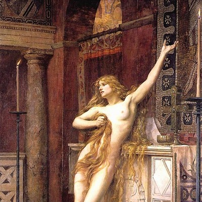

You’ve scrolled through ten wars — for your technology, your money, your history, your mind, your energy, your information, your body, your sky, your spirit, and the org chart that connects them all. This is the eleventh. The oldest. The one that was running before any of the others had names. Every war in this series took something from you and replaced it with a mediated version controlled by an institution. This scroll traces the original template — the moment humanity’s direct access to spiritual experience was severed and replaced with authorized intermediaries. Not because God is real or not real. Because access is the oldest currency — and someone has been charging admission for seventeen centuries.
Church attendance is declining. “Spiritual but not religious” is the fastest-growing religious category in America. Evangelicals fight culture wars on television. The Pope posts on Instagram. Megachurches have fog machines and Spotify playlists. Religion, in the public narrative, is either dying or weaponized — a relic or a bludgeon.
That’s the surface. Underneath it is a question nobody on cable news will ask: not whether God exists, but who controls the door between you and the experience of finding out for yourself. Because for seventeen centuries, that door has had a lock on it. And the lock wasn’t put there by atheists.
This scroll isn’t about belief. It isn’t about whether any religion is true or false. It’s about infrastructure. Who built the system that sits between human beings and direct spiritual experience? When was it built? What did it replace? And what does the blueprint look like when you lay it next to the ten wars you’ve already scrolled through?
This isn’t about faith. It’s about access. Who holds the key to the door between you and direct experience — and when did they change the locks?
For the first three centuries after the death of Jesus of Nazareth, there was no single Christian church. There were dozens of communities across the Mediterranean, each with different texts, different practices, different understandings of what the teacher had meant. Some believed in a hierarchy of priests. Others believed every person had direct access to the divine — that the kingdom of heaven was already inside you, and no intermediary was required. The Greek word for this direct knowing was gnosis. The people who practiced it were called Gnostics.
They were about to be erased.

The Gospel of Thomas — one of the buried texts — records 114 sayings of Jesus with no crucifixion, no resurrection, no priesthood needed. Saying 3: “The kingdom is inside of you, and it is outside of you. When you come to know yourselves, then you will become known.” Saying 70: “If you bring forth what is within you, what you bring forth will save you. If you do not bring forth what is within you, what you do not bring forth will destroy you.”
They didn’t bury these texts because they were wrong. They buried them because they worked. Direct experience doesn’t need a priest. And a church without a congregation is just a building.


Open-access spirituality consolidated into a single authorized institution. Everything that offered direct experience was buried, banned, or burned.
The canon was decided. The institution was built. But the direct experience didn’t stop. Across the next twelve centuries, communities kept emerging — mystics, heretics, indigenous traditions, wandering teachers — who claimed you didn’t need permission to access the divine. Every single one was destroyed. Not debated. Not refuted. Destroyed.
And if you track the method of destruction across cultures and centuries, a pattern emerges that has nothing to do with theology and everything to do with access control.


Twelve centuries. Six continents. The target was never a specific belief. It was anyone who said you don’t need permission.
The pattern isn’t theological. It’s operational. Across twelve centuries and six continents, the target was never a specific belief. It was anyone who said you don’t need permission.
You thought this was about ancient history. Councils and crusades and codex burnings. Something that happened to other people in other centuries.
It isn’t. The same pattern — centralize authority, control the interface, destroy alternatives — is running right now. It just traded robes for stadium seating and a tax exemption worth $71 billion a year. The institution changed its clothes. The lock on the door didn’t move.
The institution that burned the mystics now runs fog machines. The lock on the door didn’t break. It got a marketing budget.
The Pipeline (Scroll 009) showed what was waiting at the exit when people left institutional religion — a managed replacement of crystals, apps, and CIA-seeded counterculture. This is what they were leaving. A $71 billion tax-exempt institution that covered up the abuse of children, authorized the enslavement of entire continents, and never published its own financial records. The people leaving aren’t confused. They saw the invoice.
The institution that burned the mystics now runs fog machines. The institution that burned the libraries now livestreams on YouTube. The lock on the door didn’t break. It got a marketing budget.
Ten scrolls. Ten wars. Ten domains of human experience — technology, money, space, consciousness, energy, information, health, atmosphere, seeking, and the organizational chart behind them all. Each one documented a different system of control. Each one showed the same architecture: centralize the authority, control the interface, destroy anyone who offers a direct alternative, classify what you find, and replace what you suppress.
That architecture wasn’t invented by the CIA. It wasn’t invented by the Federal Reserve. It wasn’t invented by Standard Oil or the CFR or the Flexner Report. It was invented here. In the oldest war. The one that taught every other war how to work.
Nicaea → Jekyll Island → Flexner Report → Operation Mockingbird → MKULTRA → the same architecture, rebuilt in every domain.
Every war in this series used the same five moves: centralize, authorize, destroy, classify, replace. The Faith Wars template is the original. The other ten are franchises.
The Reformation looked like liberation — but it replaced one intermediary (the Pope) with another (the pastor and the printed Bible). Standard Oil was “broken up” into 34 companies that merged back into 3. The New Age movement (Scroll 009) replaced institutional religion with a managed pipeline of crystals, apps, and CIA-seeded counterculture. Each time, the door stays locked. The lock just gets a new brand.
Programs don’t disappear. They get sacraments. Intermediaries don’t retire. They get rebranded. And the door between you and direct experience has been guarded by the same architecture for seventeen centuries — whether the guard wears a cassock, a lab coat, or a fog machine.
Eleven scrolls. One question. Who controls the door?
The door to your technology (AI Wars). The door to your money (Money Wars). The door to your history (Space Wars). The door to your consciousness (Mind Wars). The door to your energy (Oil Wars). The door to your information (Media Wars). The door to your body (Body Wars). The door to your sky (Sky Wars). The door to your seeking (The Pipeline). The organizational chart behind every door (The Web).
And behind all of them: the oldest door. The one between you and direct experience. The one that was locked first. The one that taught every other lock how to work.
Eleven wars. One architecture. One original severance. The door was never locked. You were just told it was.
This scroll didn’t preach. It didn’t tell you what to believe. It laid a timeline — from Nicaea to Nag Hammadi, from the Cathars to the megachurch, from the Inquisition to the Index to the Vatican Archive — and let the pattern speak.
The pattern says: every institution that promises to connect you to the divine eventually becomes more interested in protecting itself than in keeping the connection open. And every system documented in the previous ten scrolls follows the same blueprint — centralize, authorize, destroy, classify, replace — that was first perfected here. In the oldest war. Against the oldest door.
Twenty-eight percent of Americans have already walked away from the building. They didn’t stop seeking. They stopped paying the toll. And the door they’re looking for — the one between themselves and direct experience — was never locked.
You were just told it was.
The door was never locked. You were just told it was.
Eleven scrolls. One architecture. Every war documented in this series used the same five moves: centralize, authorize, destroy, classify, replace. The Faith Wars template is the original. The other ten are franchises.
The door was never locked. You were just told it was.